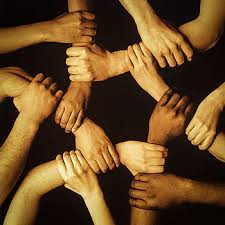

Joined Hands
Joined Hands is a common platform to bring together everyone on a journey to beat
Breast Cancer, including early suspects, patients, caregivers, doctors &
paramedics,support groups and communities, governments, NGOs etc.
It strives to create breast cancer awareness, as well as offers information,
financial & moral support and a platform to connect through communities.
Joined hands aims to serve as the common platform where everyone can connect
with everyone and get all the support, information, and resources that they
need in their fight against breast cancer.